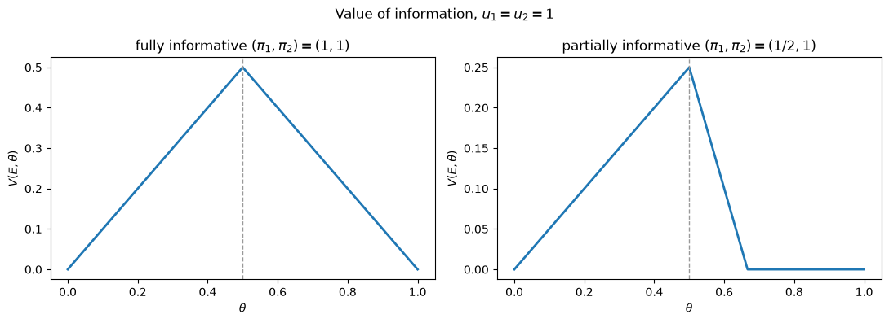
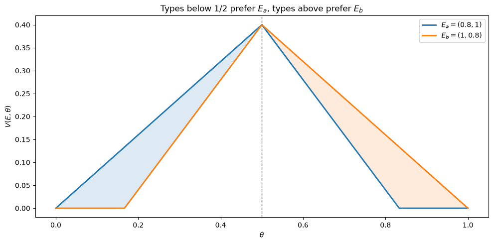
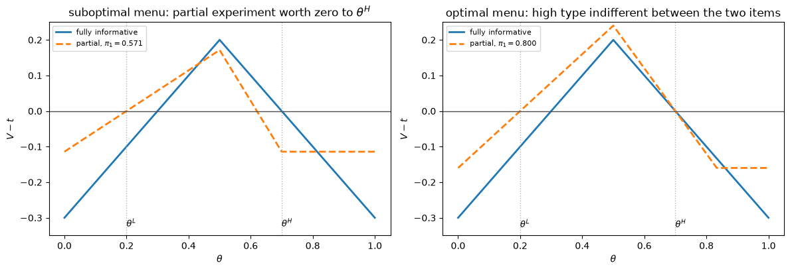
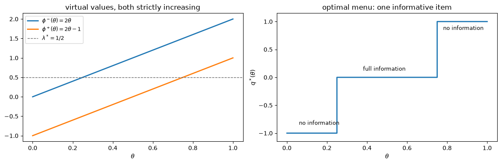
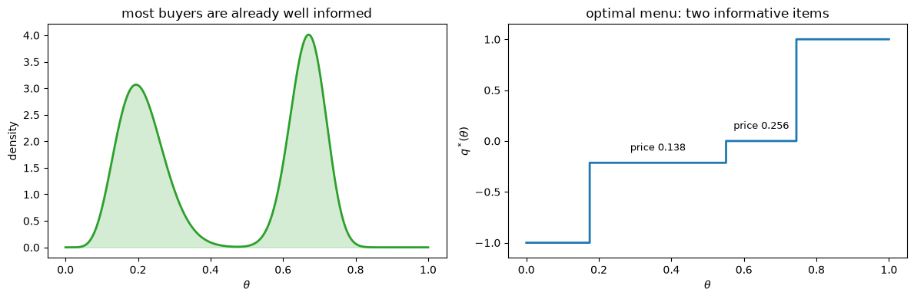
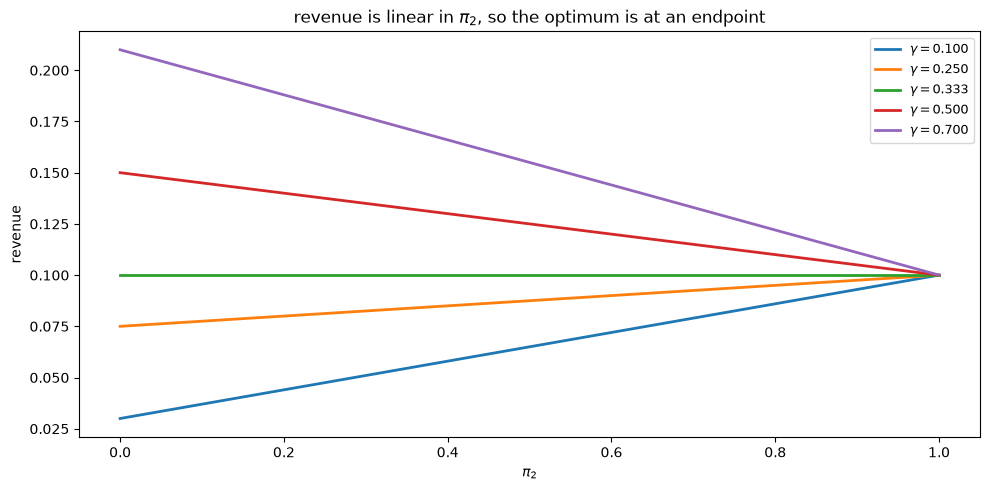

36. 信息的设计与定价#
36.1. 概述#
本节前面的讲座探讨了决策者应该偏好哪种统计实验的问题。
布莱克韦尔的实验比较定理 给出了经典的答案：当每一个贝叶斯决策者在实验 \(\mu\) 下获得的预期效用弱高于实验 \(\nu\) 时，实验 \(\mu\) 至少与实验 \(\nu\) 一样有信息量。
本讲座提出了一个不同的问题。
假设有人拥有数据并想要出售它。
她应该出售什么，定价多少？
我们研究 Bergemann et al. [2018] 的工作，他们分析了一个垄断数据卖方，面对一个已经拥有自己私人信息的买方。
买方的私人信息恰恰是他想要隐藏的东西，因为它决定了他的支付意愿。
因此卖方通过提供一份统计实验的菜单来进行筛选，为了对某些买方收取更高价格，而降低出售给其他买方的信息质量。
核心发现是，降低信息质量不仅仅是添加噪声这么简单。
布莱克韦尔的序是一个偏序，因此两个实验可能被不同的决策者以不同方式排序。
卖方正是利用了这些不可比较的对：信息具有一个纵向维度（其质量）和一个横向维度（其位置）。
这个横向维度在关于质量或数量的普通垄断筛选中没有对应物，正是它使卖方能够攫取本来无法达到的租金。
在这个过程中我们将会：
计算任意实验对任意信念类型的价值，
数值验证布莱克韦尔的序无法对卖方想要使用的实验进行排序，
通过暴力法求解两类型筛选问题，并与论文的封闭形式解进行核对，
将连续类型问题作为线性规划求解，这重现了论文的熨平（ironing）和混同结果，而无需手动实现熨平过程。
让我们从导入开始。
import matplotlib.pyplot as plt
import numpy as np
from scipy import stats
from scipy.optimize import linprog
plt.rcParams['figure.figsize'] = (10, 5)
np.set_printoptions(precision=4, suppress=True)
36.2. 决策问题#
数据买方必须在不知道状态 \(\omega\)（属于有限集合 \(\Omega\)）的情况下，从有限集合 \(A\) 中选择一个行动 \(a\)。
我们始终在匹配情形下工作，在此情形中买方希望自己的行动与状态匹配，
因此匹配状态 \(\omega_i\) 支付 \(u_i > 0\)，而任何不匹配则支付零。
从这里开始，我们采用两个状态和两个行动，\(\Omega = \{\omega_1, \omega_2\}\) 和 \(A = \{a_1, a_2\}\)，这正是 Bergemann et al. [2018] 完整求解的情形。
买方的类型是他的临时信念
这是私人信息。
卖方只知道 \(\theta\) 抽取自的分布 \(F\)。
没有额外信息时，买方在两个固定行动中选择较好的那个，因此他的保留效用为
最不确定该怎么做的类型是使得这两项相等的类型，
高于 \(\theta^*\) 的类型自己会选择 \(a_1\)，低于此值的类型会选择 \(a_2\)。
备注
买方的信念 \(\theta\) 可以由一个共同先验和一个私下观察到的信号共同生成，正如 似然比过程和贝叶斯学习 中那样。
拥有非常精确私人信号的买方的 \(\theta\) 接近 \(0\) 或 \(1\)；一个什么都没学到的买方的 \(\theta\) 接近 \(\theta^*\)。
因此本讲座中的”高类型”意味着信息不佳，而信息不佳的买方恰恰是最愿意支付的人。
36.3. 实验及其价值#
统计实验是一个将状态映射到信号的随机矩阵。
在两个状态和两个行动的情形下，考虑两个信号就足够了，我们记
其中第 \(i\) 行给出状态 \(\omega_i\) 下的信号分布。
因此 \(\pi_1 = \Pr[s_1 \mid \omega_1]\) 且 \(\pi_2 = \Pr[s_2 \mid \omega_2]\)。
我们采用归一化 \(\pi_1 + \pi_2 \geq 1\)，这只是说信号 \(s_1\) 在状态 \(\omega_1\) 中相对于状态 \(\omega_2\) 更有可能出现。
完全信息实验 \(\overline{E}\) 满足 \(\pi_1 = \pi_2 = 1\)。
在看到信号 \(s_k\) 之后，买方选择预期收益最高的行动，因此他的总价值通过逐个信号求和其能做到的最好表现来获得。
减去他的保留效用 (36.2)，得到信息的净价值
def value(pi1, pi2, theta, u1=1.0, u2=1.0):
"""Net value of experiment (pi1, pi2) to a buyer with belief theta."""
theta = np.asarray(theta, dtype=float)
s1 = np.maximum(theta * pi1 * u1, (1 - theta) * (1 - pi2) * u2)
s2 = np.maximum(theta * (1 - pi1) * u1, (1 - theta) * pi2 * u2)
return s1 + s2 - np.maximum(theta * u1, (1 - theta) * u2)
如果买方简单地服从每个信号隐含的推荐，在信号 \(s_1\) 后采取 \(a_1\)，在信号 \(s_2\) 后采取 \(a_2\)，则该价值简化为
这正是论文所使用的表达式。
def value_obedient(pi1, pi2, theta, u1=1.0, u2=1.0):
"""Value when the buyer follows the recommendation, or ignores the signal."""
theta = np.asarray(theta, dtype=float)
return np.maximum(theta * pi1 * u1 + (1 - theta) * pi2 * u2
- np.maximum(theta * u1, (1 - theta) * u2), 0.0)
在归一化 \(\pi_1 + \pi_2 \geq 1\) 下，这两个表达式完全一致，而在没有该归一化时它们可能差别很大，这正是该归一化的用途。
grid = np.linspace(0, 1, 2001)
worst_ok = worst_bad = 0.0
for p1 in np.linspace(0, 1, 51):
for p2 in np.linspace(0, 1, 51):
gap = np.abs(value(p1, p2, grid) - value_obedient(p1, p2, grid)).max()
if p1 + p2 >= 1:
worst_ok = max(worst_ok, gap)
else:
worst_bad = max(worst_bad, gap)
print(f'largest gap where pi1 + pi2 >= 1: {worst_ok:.2e}')
print(f'largest gap where pi1 + pi2 < 1: {worst_bad:.4f}')
largest gap where pi1 + pi2 >= 1: 1.11e-16
largest gap where pi1 + pi2 < 1: 0.5000
从此我们使用一般形式 (36.5)，因为一个谎报自己类型的买方通常不会想要服从内置于别人实验中的推荐。
以下是信息价值作为买方类型的函数。
theta = np.linspace(0, 1, 1001)
fig, axes = plt.subplots(1, 2, figsize=(11, 4))
for ax, (p1, p2), ttl in zip(
axes, [(1.0, 1.0), (0.5, 1.0)],
[r'fully informative $(\pi_1,\pi_2)=(1,1)$',
r'partially informative $(\pi_1,\pi_2)=(1/2,1)$']):
ax.plot(theta, value(p1, p2, theta), lw=2)
ax.axvline(0.5, color='0.6', ls='--', lw=1)
ax.set(xlabel=r'$\theta$', ylabel=r'$V(E,\theta)$', title=ttl)
fig.suptitle('Value of information, $u_1 = u_2 = 1$')
fig.tight_layout()
plt.show()

图 36.1 Value of full and partial information#
这些图形有三个特征推动了后续所有内容。
价值在 \(\theta\) 上是分段线性的，因为类型是概率，而预期效用在概率上是线性的。
价值在 \(\theta^*\) 处最高，在 \(\theta \in \{0, 1\}\) 处降为零：已经知道状态的买方将什么都不支付，而最不知道的买方会支付最多。
右图中部分信息的实验对高于 \(2/3\) 的类型来说完全没有价值，尽管它对刚低于 \(1/2\) 的类型来说价值很大。
最后这个特性是卖方的主要工具。
36.4. 布莱克韦尔的序只是偏序#
布莱克韦尔的实验比较定理 确立了实验 \(E\) 在布莱克韦尔意义上至少与 \(E'\) 一样具有信息量，当且仅当 \(E'\) 是 \(E\) 的信息降级（garbling），意味着存在一个随机矩阵 \(M\) 满足
当 \(E\) 可逆时，这很容易检验：求解 \(M = E^{-1}E'\) 并检查 \(M\) 是否为随机矩阵。
def experiment(pi1, pi2):
return np.array([[pi1, 1 - pi1], [1 - pi2, pi2]])
def garbling(E, Ep, tol=1e-9):
"""Return M with Ep = E @ M if Ep is a garbling of E, else None."""
if abs(np.linalg.det(E)) < tol:
return None
M = np.linalg.solve(E, Ep)
if (M > -tol).all() and np.allclose(M.sum(axis=1), 1, atol=tol):
return M
return None
pairs = [((1, 1), (0.8, 1)), ((1, 1), (1, 0.8)),
((0.9, 0.9), (0.8, 0.8)),
((0.8, 1), (1, 0.8)), ((1, 0.8), (0.8, 1))]
for a, b in pairs:
ok = garbling(experiment(*a), experiment(*b)) is not None
print(f' is {b} a garbling of {a}? {"yes" if ok else "no"}')
is (0.8, 1) a garbling of (1, 1)? yes
is (1, 0.8) a garbling of (1, 1)? yes
is (0.8, 0.8) a garbling of (0.9, 0.9)? yes
is (1, 0.8) a garbling of (0.8, 1)? no
is (0.8, 1) a garbling of (1, 0.8)? no
完全信息实验可以降级为任何东西，而 \((0.9, 0.9)\) 可以降级为噪声更均匀的 \((0.8, 0.8)\)。
这些是纵向比较，布莱克韦尔定理说所有类型对此都一致同意。
但 \((0.8, 1)\) 和 \((1, 0.8)\) 双方都不能互相降级。
布莱克韦尔的序对它们根本无法排序，这意味着不同的类型可以自由地对它们做出不同的排序。
va, vb = value(0.8, 1, theta), value(1, 0.8, theta)
fig, ax = plt.subplots()
ax.plot(theta, va, lw=2, label=r'$E_a = (0.8, 1)$')
ax.plot(theta, vb, lw=2, label=r'$E_b = (1, 0.8)$')
ax.fill_between(theta, va, vb, where=va > vb, alpha=0.15, color='C0')
ax.fill_between(theta, va, vb, where=vb > va, alpha=0.15, color='C1')
ax.axvline(0.5, color='0.4', ls='--', lw=1)
ax.set(xlabel=r'$\theta$', ylabel=r'$V(E,\theta)$',
title='Types below $1/2$ prefer $E_a$, types above prefer $E_b$')
ax.legend()
fig.tight_layout()
plt.show()
for t in [0.2, 0.35, 0.65, 0.8]:
pref = 'E_a' if value(0.8, 1, t) > value(1, 0.8, t) else 'E_b'
print(f' theta = {t}: V(E_a) = {value(0.8, 1, t):.4f},'
f' V(E_b) = {value(1, 0.8, t):.4f} prefers {pref}')

图 36.2 Two experiments that Blackwell’s order does not rank#
theta = 0.2: V(E_a) = 0.1600, V(E_b) = 0.0400 prefers E_a
theta = 0.35: V(E_a) = 0.2800, V(E_b) = 0.2200 prefers E_a
theta = 0.65: V(E_a) = 0.2200, V(E_b) = 0.2800 prefers E_b
theta = 0.8: V(E_a) = 0.0400, V(E_b) = 0.1600 prefers E_b
\(E_a\) 更擅长排除状态 \(\omega_2\)，而 \(E_b\) 更擅长排除状态 \(\omega_1\)。
一个已经认为 \(\omega_1\) 更可能的买方想要帮助自己区分尚未排除的各种可能性，因此他重视 \(E_b\)；而倾向于另一方向的买方则重视 \(E_a\)。
这就是信息的横向维度。
在关于质量或数量的普通非线性定价中，所有类型都认同产品的排序，卖方只能沿单一阶梯上下移动。
而这里卖方拥有第二个调节旋钮，转动它就能让一种类型得到对另一种类型毫无价值的东西。
36.5. 卖方的问题#
卖方承诺提供一份菜单 \(\{E(\theta), t(\theta)\}\)，为每个申报的类型分配一个实验和一个价格。
支付不能以状态、信号或买方的行动为条件，因此一个实验对买方的价值仅由他的信念决定。
将买方的租金写作 \(V(\theta) = V(E(\theta), \theta) - t(\theta)\)，卖方求解
受制于激励相容和个人理性约束，
Bergemann et al. [2018] 建立了两个结构性结果，我们将在计算的每一份菜单中看到它们得到证实。
命题 36.1
在任何最优菜单中：
提供完全信息实验 \(\overline{E}\)；
每个实验都是非分散的，意味着对某个 \(i \neq j\) 有 \(\pi_{ij} = 0\)；
在匹配情形下，每个实验都是集中的，意味着对某个 \(i\) 有 \(\pi_{ii} = 1\)。
第3点是说，在我们的二元设置中，菜单中的每个实验都有 \(\pi_1 = 1\) 或 \(\pi_2 = 1\)。
最优的降级从不是在各处添加无偏噪声；它使一个状态完全可检测，而使另一个状态模糊化。
36.6. 两种类型#
取两个类型 \(\theta^L\) 和 \(\theta^H\)，其中 \(\theta^H\) 是高价值类型，含义是他更重视完全信息实验，
当 \(u_1 = u_2\) 时，这表明 \(|\theta^H - 1/2| \leq |\theta^L - 1/2|\)，因此高类型是那个最初信息较少的类型。
令 \(\gamma = \Pr[\theta = \theta^H]\)。
类型是一致的，如果 \(\theta^* < \theta^H < \theta^L\)，即两者都会在没有额外信息的情况下选择同一行动；类型是不一致的，如果 \(\theta^L < \theta^* < \theta^H\)。
最优菜单具有熟悉的形式：高类型购买 \(\overline{E}\)，低类型的参与约束绑定，高类型的激励约束绑定。
一旦选定低类型的实验，这三个事实就确定了两个价格。
def two_type_revenue(pi1, pi2, tL, tH, gamma, u1=1.0, u2=1.0):
"""Revenue when the high type buys E_bar and the low type buys (pi1, pi2)."""
VbarH, VbarL = value(1, 1, tH, u1, u2), value(1, 1, tL, u1, u2)
VL_L, VL_H = value(pi1, pi2, tL, u1, u2), value(pi1, pi2, tH, u1, u2)
t_low = VL_L # low type's IR binds
t_high = VbarH - VL_H + t_low # high type's IC binds
if t_high > VbarH + 1e-12: # high type must participate
return -np.inf
if VbarL - t_high > 1e-12: # low type must not deviate
return -np.inf
return gamma * t_high + (1 - gamma) * t_low
36.6.1. 不一致类型#
设 \(\theta^L = 1/5\) 且 \(\theta^H = 7/10\)，\(u_1 = u_2 = 1\)，因此 \(\theta^* = 1/2\) 位于两者之间。
因为这两种类型自己会选择不同的行动，卖方可以构建一个对一种类型有价值而对另一种类型毫无价值的实验。
选取 \(\pi_2 = 1\) 和
使高类型在信号 \(s_1\) 后对他的两个行动恰好无差异，因此该实验对他毫无价值，而低类型则严格地重视它。
这是可行的但不是最优的。
卖方通过让高类型的激励约束改为绑定做得更好，这给出
tL, tH, u1, u2 = 0.2, 0.7, 1.0, 1.0
pi1_zero = (u1 * tH - u2 * (1 - tH)) / (u1 * tH)
pi1_opt = (u1 * tH - u2 * (1 - tH)) / (u1 * (tH - tL))
print(f'zero-value-to-high experiment pi1 = {pi1_zero:.4f} (= 4/7)')
print(f'binding-IC experiment pi1 = {pi1_opt:.4f} (= 4/5)')
print(f'\n V(E_zero, theta_H) = {value(pi1_zero, 1, tH):.4f}')
print(f' V(E_opt, theta_L) = {value(pi1_opt, 1, tL):.4f}'
f' V(E_opt, theta_H) = {value(pi1_opt, 1, tH):.4f}')
zero-value-to-high experiment pi1 = 0.5714 (= 4/7)
binding-IC experiment pi1 = 0.8000 (= 4/5)
V(E_zero, theta_H) = 0.0000
V(E_opt, theta_L) = 0.1600 V(E_opt, theta_H) = 0.1600
第二个实验给两种类型带来相同的总价值，因此卖方可以向每种类型收取恰好等于信息价值的费用，不留下任何租金。
fig, axes = plt.subplots(1, 2, figsize=(12, 4.2))
for ax, p1, ttl in zip(axes, [pi1_zero, pi1_opt],
['suboptimal menu: partial experiment worth zero to $\\theta^H$',
'optimal menu: high type indifferent between the two items']):
t_hi = value(1, 1, tH) # price of E_bar
t_lo = value(p1, 1, tL) # price of partial item
ax.plot(theta, value(1, 1, theta) - t_hi, lw=2, label='fully informative')
ax.plot(theta, value(p1, 1, theta) - t_lo, lw=2, ls='--',
label=f'partial, $\\pi_1={p1:.3f}$')
ax.axhline(0, color='0.3', lw=1)
for t, nm in [(tL, r'$\theta^L$'), (tH, r'$\theta^H$')]:
ax.axvline(t, color='0.7', ls=':', lw=1)
ax.annotate(nm, (t, ax.get_ylim()[0]), fontsize=9)
ax.set(xlabel=r'$\theta$', ylabel=r'$V - t$', title=ttl, ylim=(-0.35, 0.25))
ax.legend(fontsize=8, loc='upper left')
fig.tight_layout()
plt.show()

图 36.3 Net value of the two menus as a function of the buyer’s type#
在左图中，高类型对完全信息实验的净价值严格高于他对部分实验的净价值，因此他的激励约束是松弛的，卖方正在把钱留在桌上。
在右图中，两条曲线恰好在 \(\theta^H\) 处相交。
现在我们将闭式解 (36.11) 与对所有实验的暴力搜索进行比较。
def brute_force(tL, tH, gamma, n=301, u1=1.0, u2=1.0):
"""Search over all (pi1, pi2) for the best low-type experiment."""
g = np.linspace(0, 1, n)
best, arg = -np.inf, None
for p1 in g:
for p2 in g:
if p1 + p2 < 1:
continue
r = two_type_revenue(p1, p2, tL, tH, gamma, u1, u2)
if r > best:
best, arg = r, (p1, p2)
return best, arg
print(f'{"gamma":>7s}{"brute force":>13s}{"argmax":>18s}'
f'{"eq (20) menu":>14s}{"E_bar to both":>15s}')
for gamma in [0.10, 0.25, 0.30, 0.50, 0.90]:
best, arg = brute_force(tL, tH, gamma)
closed = two_type_revenue(pi1_opt, 1.0, tL, tH, gamma)
both = two_type_revenue(1.0, 1.0, tL, tH, gamma)
print(f'{gamma:7.2f}{best:13.5f} ({arg[0]:.3f}, {arg[1]:.3f})'
f'{closed:14.5f}{both:15.5f}')
print(f'\nthe paper: discriminate iff gamma > theta_L / theta_H = {tL / tH:.4f}')
gamma brute force argmax eq (20) menu E_bar to both
0.10 0.20000 (1.000, 1.000) 0.17400 0.20000
0.25 0.20000 (1.000, 1.000) 0.19500 0.20000
0.30 0.20200 (0.800, 1.000) 0.20200 0.20000
0.50 0.23000 (0.800, 1.000) 0.23000 0.20000
0.90 0.28600 (0.800, 1.000) 0.28600 0.20000
the paper: discriminate iff gamma > theta_L / theta_H = 0.2857
只要价格歧视是有利可图的，暴力搜索的最优点就落在 \((\pi_1, \pi_2) = (0.8, 1)\) 处，与 (36.11) 完全吻合；否则落在 \((1, 1)\)。
这个转换恰好发生在 \(\gamma = \theta^L / \theta^H\) 处。
当低类型比较常见时，卖方倾向于以较低价格将完全信息实验卖给所有人；当高类型比较常见时，卖方倾向于通过降低低类型获得的信息来保护高价格。
还请注意，最优菜单中的两个实验都有 \(\pi_2 = 1\)，这证实了 命题 36.1 的第3点。
36.7. 连续类型#
现在设 \(\theta\) 分布在 \([0,1]\) 上，密度为 \(f\)，分布函数为 \(F\)。
关键的简化在于：一个实验的价值仅通过标量
来依赖于 \((\pi_1, \pi_2)\)，Bergemann et al. [2018] 称之为该实验的差异性信息量。
用 \(q\) 表示，该价值变为
完全信息实验对应 \(q = u_1 - u_2\)。
两个端点 \(q = -u_2\) 和 \(q = u_1\) 是这样的实验：某个信号在两个状态下都以概率一发生，因此不传递任何信息。
def value_q(q, theta, u1=1.0, u2=1.0):
"""Value of the experiment with differential informativeness q."""
theta = np.asarray(theta, dtype=float)
gross = theta * q + u2 + np.minimum(u1 - u2 - q, 0.0)
return np.maximum(gross - np.maximum(theta * u1, (1 - theta) * u2), 0.0)
def q_to_experiment(q, u1=1.0, u2=1.0):
"""Recover (pi1, pi2) from q using pi1 = 1 or pi2 = 1."""
return (1.0, (u1 - q) / u2) if q >= u1 - u2 else ((q + u2) / u1, 1.0)
for q in [-1.0, -0.5, 0.0, 0.5, 1.0]:
p1, p2 = q_to_experiment(q)
print(f' q = {q:+.2f} -> (pi1, pi2) = ({p1:.3f}, {p2:.3f}),'
f' max value over types = {value_q(q, theta).max():.4f}')
q = -1.00 -> (pi1, pi2) = (0.000, 1.000), max value over types = 0.0000
q = -0.50 -> (pi1, pi2) = (0.500, 1.000), max value over types = 0.2500
q = +0.00 -> (pi1, pi2) = (1.000, 1.000), max value over types = 0.5000
q = +0.50 -> (pi1, pi2) = (1.000, 0.500), max value over types = 0.2500
q = +1.00 -> (pi1, pi2) = (1.000, 0.000), max value over types = 0.0000
现在菜单是一个函数 \(q(\theta)\)，而激励相容要求它是非递减的。
认为 \(\omega_1\) 更可能的类型想要 \(q\) 更高的实验，这些实验对他们认为不太可能的状态提供更清晰的证据。
还有一个第二种、不太常见的限制。
因为信息对于类型 \(\theta \in \{0, 1\}\) 毫无价值，在 \([0, \theta^*]\) 和 \([\theta^*, 1]\) 上分别应用包络定理，并使临界类型 \(\theta^*\) 的租金的两个表达式相匹配，就迫使
注意这个积分是关于 \(d\theta\) 的，而不是关于 \(dF(\theta)\) 的。
有了这两个约束，卖方的问题简化为
受制于 \(q\) 非递减以及 (36.14)。
36.7.1. 作为线性规划求解#
(36.15) 的被积函数在 \(q\) 上是凹的且分段线性的，因为 \(\min\{(d - q) f, 0\} = -f \max\{q - d, 0\}\)，其中 \(d = u_1 - u_2\) 且 \(f \geq 0\)。
在线性约束下最大化一个凹的分段线性目标函数是一个线性规划问题。
引入 \(z(\theta) \geq \max\{q(\theta) - d,\ 0\}\) 并在网格上离散化 \(\theta\)，得到
受制于 \(z_n \geq q_n - d\)，\(z_n \geq 0\)，\(q_{n+1} \geq q_n\)， \(-u_2 \leq q_n \leq u_1\)，以及 \(\sum_n w_n q_n = d\)。
def solve_menu(theta, f, u1=1.0, u2=1.0):
"""Solve the seller's problem on a grid of types by linear programming."""
N = len(theta)
dth = theta[1] - theta[0]
F = np.cumsum(f) * dth
F = F / F[-1]
w = np.full(N, dth)
d = u1 - u2
c = np.concatenate([-(theta * f + F) * w, f * w]) # linprog minimizes
A_ub = np.hstack([np.eye(N), -np.eye(N)]) # q - z <= d
b_ub = np.full(N, d)
D = np.zeros((N - 1, 2 * N)) # q_n - q_{n+1} <= 0
rows = np.arange(N - 1)
D[rows, rows], D[rows, rows + 1] = 1.0, -1.0
A_ub = np.vstack([A_ub, D])
b_ub = np.concatenate([b_ub, np.zeros(N - 1)])
A_eq = np.concatenate([w, np.zeros(N)])[None, :] # integral constraint
bounds = [(-u2, u1)] * N + [(0, None)] * N
res = linprog(c, A_ub=A_ub, b_ub=b_ub, A_eq=A_eq, b_eq=np.array([d]),
bounds=bounds, method='highs')
return res.x[:N], res
这个线性规划自动处理了单调性约束。
这一点很重要，因为另一种选择是手动实现迈尔森的熨平（ironing）程序：构造虚拟值
用它们积分的凸包的导数来替换它们，然后找到 (36.14) 上乘数的值（参见 Myerson [1981] 和 Toikka [2011]）。
这个线性规划隐式地完成了所有这些工作。
我们还需要价格，这来自于要求处于两个项目边界处的买方对两者无差异。
def menu_items(theta, q, u1=1.0, u2=1.0, tol=1e-4, min_width=0.01):
"""Distinct items in the menu, with the interval of types served and the price.
Values of q taken on a negligible set of types are transition artifacts of the
grid, not items on the menu, so we drop them.
"""
qr = np.round(q / tol) * tol
vals = [v for v in np.unique(qr)
if theta[qr == v].max() - theta[qr == v].min() >= min_width]
items = sorted([(v, theta[qr == v].min(), theta[qr == v].max()) for v in vals],
key=lambda x: x[1])
out, prev_v, prev_t = [], None, 0.0
for v, lo, hi in items:
if value_q(v, theta, u1, u2).max() < 1e-9: # uninformative item
price = 0.0
elif prev_v is None:
price = 0.0
else:
price = float(value_q(v, lo, u1, u2)
- value_q(prev_v, lo, u1, u2) + prev_t)
out.append((v, lo, hi, price))
prev_v, prev_t = v, price
return out
36.7.2. 均匀分布的类型#
在 \(u_1 = u_2 = 1\) 且 \(\theta\) 均匀分布的情况下，虚拟值为 \(\phi^-(\theta) = 2\theta\) 和 \(\phi^+(\theta) = 2\theta - 1\)。
两者都严格递增，因此不需要熨平，最优菜单应该只包含一个信息项目。
N = 2001
theta_g = np.linspace(0, 1, N)
q_unif, res = solve_menu(theta_g, np.ones(N))
print('LP status:', res.message)
print('distinct values of q:', np.unique(np.round(q_unif, 4)))
for v, lo, hi, p in menu_items(theta_g, q_unif):
p1, p2 = q_to_experiment(v)
print(f' q = {v:+.4f} (pi1, pi2) = ({p1:.3f}, {p2:.3f})'
f' types [{lo:.3f}, {hi:.3f}] price {p:.4f}')
LP status: Optimization terminated successfully. (HiGHS Status 7: Optimal)
distinct values of q: [-1. -0. 1.]
q = -1.0000 (pi1, pi2) = (0.000, 1.000) types [0.000, 0.249] price 0.0000
q = -0.0000 (pi1, pi2) = (1.000, 1.000) types [0.250, 0.750] price 0.2500
q = +1.0000 (pi1, pi2) = (1.000, 0.000) types [0.751, 1.000] price 0.0000
卖方以单一价格向中间范围的类型提供完全信息实验，而对其他所有人不提供任何东西。
其临界点和价格与 Bergemann et al. [2018] 的解析解完全一致：对 \(\theta \in [1/4, 3/4]\) 的类型以 \(1/4\) 的价格提供完全信息。
这就是 Riley and Zeckhauser [1983] 的”无议价”结果，应用于信息领域。
fig, axes = plt.subplots(1, 2, figsize=(12, 4))
axes[0].plot(theta_g, 2 * theta_g, lw=2, label=r'$\phi^-(\theta) = 2\theta$')
axes[0].plot(theta_g, 2 * theta_g - 1, lw=2, label=r'$\phi^+(\theta) = 2\theta - 1$')
axes[0].axhline(0.5, color='0.4', ls='--', lw=1, label=r'$\lambda^* = 1/2$')
axes[0].set(xlabel=r'$\theta$', title='virtual values, both strictly increasing')
axes[0].legend(fontsize=9)
axes[1].step(theta_g, q_unif, lw=2, where='mid')
axes[1].set(xlabel=r'$\theta$', ylabel=r'$q^*(\theta)$', ylim=(-1.15, 1.15),
title='optimal menu: one informative item')
axes[1].annotate('no information', (0.06, -0.85), fontsize=9)
axes[1].annotate('full information', (0.38, 0.12), fontsize=9)
axes[1].annotate('no information', (0.78, 0.85), fontsize=9)
fig.tight_layout()
plt.show()

图 36.4 Optimal menu with uniformly distributed types#
36.7.3. 双峰类型与版本化的理由#
Bergemann et al. [2018] 中的推论1说，只有当虚拟值需要熨平时才会提供第二个实验。
由于类型是信念，打破正则性的一种自然方式是使大多数买方已经信息充分，从而使密度在两端都堆积。
我们遵循论文的做法，取 \(\text{Beta}(8, 30)\) 和 \(\text{Beta}(60, 30)\) 的等权混合。
f_bimodal = (0.5 * stats.beta(8, 30).pdf(theta_g)
+ 0.5 * stats.beta(60, 30).pdf(theta_g))
q_bi, res_bi = solve_menu(theta_g, f_bimodal)
print('LP status:', res_bi.message)
print('distinct values of q:', np.unique(np.round(q_bi, 3)))
print()
for v, lo, hi, p in menu_items(theta_g, q_bi):
p1, p2 = q_to_experiment(v)
label = 'no information' if abs(p) < 1e-9 else (
'full information' if abs(v) < 1e-6 else 'partial information')
print(f' q = {v:+.4f} (pi1, pi2) = ({p1:.3f}, {p2:.3f})'
f' types [{lo:.3f}, {hi:.3f}] price {p:.4f} {label}')
LP status: Optimization terminated successfully. (HiGHS Status 7: Optimal)
distinct values of q: [-1. -0.214 -0. 1. ]
q = -1.0000 (pi1, pi2) = (0.000, 1.000) types [0.000, 0.175] price 0.0000 no information
q = -0.2141 (pi1, pi2) = (0.786, 1.000) types [0.175, 0.550] price 0.1375 partial information
q = -0.0000 (pi1, pi2) = (1.000, 1.000) types [0.551, 0.745] price 0.2555 full information
q = +1.0000 (pi1, pi2) = (1.000, 0.000) types [0.745, 1.000] price 0.0000 no information
现在菜单包含两个信息项目，这与 命题 36.1 以及最优菜单不超过两个项目的结果相符。
部分项目具有 \(\pi_2 = 1\)，因此信号 \(s_1\) 只在状态 \(\omega_1\) 中出现，能够完美揭示该状态，而信号 \(s_2\) 则使买方保持不确定。
它被一系列相对信息充分的类型购买，这些类型不愿意支付卖方想要向 \(\theta \approx 0.7\) 附近大量买方收取的价格。
items = menu_items(theta_g, q_bi)
fig, axes = plt.subplots(1, 2, figsize=(12, 4))
axes[0].plot(theta_g, f_bimodal, lw=2, color='C2')
axes[0].fill_between(theta_g, f_bimodal, alpha=0.2, color='C2')
axes[0].set(xlabel=r'$\theta$', ylabel='density',
title='most buyers are already well informed')
axes[1].step(theta_g, q_bi, lw=2, where='mid')
axes[1].set(xlabel=r'$\theta$', ylabel=r'$q^*(\theta)$', ylim=(-1.15, 1.15),
title='optimal menu: two informative items')
for v, lo, hi, p in items:
if p > 1e-9:
axes[1].annotate(f'price {p:.3f}', ((lo + hi) / 2, v + 0.12),
ha='center', fontsize=9)
fig.tight_layout()
plt.show()

图 36.5 Bimodal type density and the resulting two-item menu#
我们可以直接看出为什么卖方要费这个功夫。
def revenue(theta, q, f, u1=1.0, u2=1.0):
"""Expected revenue from the menu q under density f."""
dth = theta[1] - theta[0]
price = np.zeros_like(theta)
for v, lo, hi, p in menu_items(theta, q, u1, u2):
price[(theta >= lo) & (theta <= hi)] = p
return np.sum(price * f) * dth / (np.sum(f) * dth)
q_single = np.where(q_bi < -0.5, -1.0, np.where(q_bi > 0.5, 1.0, 0.0))
print(f'revenue, optimal two-item menu {revenue(theta_g, q_bi, f_bimodal):.5f}')
print(f'revenue, best single-item menu '
f'{revenue(theta_g, q_single, f_bimodal):.5f}')
revenue, optimal two-item menu 0.16751
revenue, best single-item menu 0.14293
去掉部分项目而只出售完全信息，会使卖方损失收入。
部分实验不是同一产品的加噪版本，它是一个位置不同的产品，价格足够低以吸引信息充分的类型，同时又足够无用以至于不会对信息不充分的类型冲击高价格。
36.8. 结束语#
布莱克韦尔定理告诉我们，何时所有决策者都一致认为一个实验优于另一个。
将其作为一种设计原则来解读，其真正的内涵在于它保持沉默的那个集合的大小。
Bergemann et al. [2018] 表明，出售数据的垄断者恰恰生活在那个集合中，因为基于信念的筛选需要不同类型对之做出不同排序的产品。
有两个教训超越了这个模型。
第一，信息的最优降级是结构化的而非随机的：菜单上的每个实验都保持一个状态完全可检测，同时使另一个状态模糊化，因此数据产品不应通过向数据库添加无偏噪声来构建。
第二，版本化恰恰在买方已经信息充分时才变得值得，因为那正是支付意愿的分布足够不规则，需要熨平的时候。
向信息不完全的买方出售信息有着悠久的历史。
Admati and Pfleiderer [1986] 研究了一个卖方面对一个事前相同的连续交易者群体，这些交易者随后交易一个共同价值资产，他们发现卖方想要提供带噪声且个性化的信息，从而使每个交易者对自己所知的信息保持局部垄断。
那里的异质性是由卖方创造的；而在这里，异质性是买方自己的先验信息，正是这一点使问题变成了筛选问题。
Bergemann and Bonatti [2015] 研究了同一市场的另一面，即当数据价格由竞争决定时，买方决定购买哪些查询。
一个有用的对比是 Kamenica and Gentzkow [2011]，其中发送方也承诺一个信息结构，但没有货币转移，而是直接关心接收方的行动；这里的卖方只关心收入，且不能以状态、信号或买方的行动为条件设定支付。
想要了解统计学背景的读者可以回到 布莱克韦尔的实验比较定理，了解经济性、充分性和不确定性降低标准之间的等价关系；可以参阅 似然比过程和贝叶斯学习，了解私人信号如何产生此处买方类型所依据的临时信念；还可以参阅 信息与市场均衡，了解当信息通过价格而非直接出售来传递时会发生什么。
36.9. 练习#
练习 36.1
本练习研究一致情形，即两种类型在没有额外信息的情况下会采取相同的行动。
设 \(u_1 = u_2 = 1\)，\(\theta^L = 0.9\) 且 \(\theta^H = 0.7\)，因此 \(\theta^* = 1/2 < \theta^H < \theta^L\)。
因为两种类型自己都会选择 \(a_1\)，卖方没有理由降低低类型关于 \(\omega_1\) 所学到的信息，因此设 \(\pi_1 = 1\)，并将 \(\pi_2\) 作为唯一的选择变量。
对若干个 \(\gamma\) 值，绘制卖方收入关于 \(\pi_2 \in [0, 1]\) 的图形，并确认其为线性的。
得出结论：最优点总是在端点处，因此低类型要么得到完全信息，要么什么都得不到。
Bergemann et al. [2018] 表明，低类型获得完全信息实验当且仅当 \(\gamma \leq (1 - \theta^L)/(1 - \theta^H)\)。
用二分法数值定位切换点并进行比较。
为什么这里的答案是极端的，而讲座中不一致情形的例子却产生了内部解 \(\pi_1 = 4/5\)？
解答 练习 36.1
这里给出一种解法：
tL_c, tH_c = 0.9, 0.7
p2_grid = np.linspace(0, 1, 401)
fig, ax = plt.subplots()
for gamma in [0.1, 0.25, 1/3, 0.5, 0.7]:
r = np.array([two_type_revenue(1.0, p2, tL_c, tH_c, gamma) for p2 in p2_grid])
dev = np.abs(r - np.interp(p2_grid, [0, 1], [r[0], r[-1]])).max()
ax.plot(p2_grid, r, lw=2, label=rf'$\gamma = {gamma:.3f}$')
print(f'gamma = {gamma:.3f}: revenue at pi2=0 is {r[0]:.5f}, '
f'at pi2=1 is {r[-1]:.5f}, deviation from linear {dev:.1e}')
ax.set(xlabel=r'$\pi_2$', ylabel='revenue',
title='revenue is linear in $\pi_2$, so the optimum is at an endpoint')
ax.legend(fontsize=9)
fig.tight_layout()
plt.show()
gamma = 0.100: revenue at pi2=0 is 0.03000, at pi2=1 is 0.10000, deviation from linear 8.3e-17
gamma = 0.250: revenue at pi2=0 is 0.07500, at pi2=1 is 0.10000, deviation from linear 8.3e-17
gamma = 0.333: revenue at pi2=0 is 0.10000, at pi2=1 is 0.10000, deviation from linear 9.7e-17
gamma = 0.500: revenue at pi2=0 is 0.15000, at pi2=1 is 0.10000, deviation from linear 9.7e-17
gamma = 0.700: revenue at pi2=0 is 0.21000, at pi2=1 is 0.10000, deviation from linear 1.1e-16

lo, hi = 0.0, 1.0
for _ in range(60):
mid = (lo + hi) / 2
if two_type_revenue(1, 1, tL_c, tH_c, mid) >= two_type_revenue(1, 0, tL_c, tH_c, mid):
lo = mid
else:
hi = mid
print(f'numerical switch point gamma = {lo:.6f}')
print(f'(1 - theta_L) / (1 - theta_H) = {(1 - tL_c) / (1 - tH_c):.6f}')
numerical switch point gamma = 0.333333
(1 - theta_L) / (1 - theta_H) = 0.333333
收入在 \(\pi_2\) 上的线性程度达到了机器精度，因此最优点总是位于 \(\pi_2 \in \{0, 1\}\)，且切换点确切地发生在 \(\gamma = 1/3\)，正如预测的那样。
极端解的原因在于，在一致信念下，两种类型无论如何都会选择 \(a_1\)，因此唯一的问题在于卖方对 \(\omega_2\) 揭示了多少信息。
这时两种类型都通过同一项 \((1 - \theta)\pi_2 u_2\) 来评估该实验，这就是为什么目标函数和约束在单一变量 \(\pi_2\) 上是线性的，也是为什么 Riley and Zeckhauser [1983] 的无议价逻辑在此适用的原因。
在不一致信念下，两种类型自己会采取不同的行动，价值函数中的拐点位于两者之间，卖方可以将某个实验定位，使其对一种类型有很大价值，而对另一种类型价值很小。
正是这种可能性使得内部扭曲成为最优。
练习 36.2
Bergemann et al. [2018] 中的推论1指出，只要两个虚拟值 (36.16) 都是严格递增的，最优菜单就只包含一个项目，而对于均匀分布的类型，这一点与支付函数 \((u_1, u_2)\) 无关。
通过对若干非对称支付对，例如 \((u_1, u_2) \in \{(1, 1), (2, 1), (1, 3), (5, 1)\}\)，求解均匀类型下卖方的问题，来验证这一点。
对每种情况，报告 \(\theta^*\)、被服务类型的区间以及价格。
确认所提供的项目始终是完全信息实验，正如 命题 36.1 所要求的那样。
解答 练习 36.2
这里给出一种解法：
print(f'{"u1":>4s}{"u2":>4s}{"theta*":>9s}{"q offered":>12s}'
f'{"types served":>22s}{"price":>9s}')
for u1_, u2_ in [(1, 1), (2, 1), (1, 3), (5, 1)]:
q_a, _ = solve_menu(theta_g, np.ones(N), u1_, u2_)
star = u2_ / (u1_ + u2_)
served = [it for it in menu_items(theta_g, q_a, u1_, u2_) if it[3] > 1e-9]
v, lo, hi, p = served[0]
print(f'{u1_:4d}{u2_:4d}{star:9.4f}{v:12.4f}'
f'{f"[{lo:.3f}, {hi:.3f}]":>22s}{p:9.4f}')
assert abs(v - (u1_ - u2_)) < 1e-3 # the item is fully informative
print('\nevery menu contains exactly one informative item, '
'and it is the fully informative one')
u1 u2 theta* q offered types served price
1 1 0.5000 -0.0000 [0.250, 0.750] 0.2500
2 1 0.3333 1.0000 [0.167, 0.666] 0.3340
1 3 0.7500 -2.0000 [0.375, 0.875] 0.3750
5 1 0.1667 4.0000 [0.084, 0.584] 0.4200
every menu contains exactly one informative item, and it is the fully informative one
均匀密度的虚拟值为 \(\phi^-(\theta) = 2\theta\) 和 \(\phi^+(\theta) = 2\theta - 1\)，无论支付函数如何，因为 \(u_1\) 和 \(u_2\) 仅通过 \(d = u_1 - u_2\) 以及 \(q\) 的边界进入卖方的问题，而不通过 \(f\) 或 \(F\)。
两者都严格递增，因此不需要熨平，单一项目就是最优的。
支付函数确实会移动 \(\theta^*\)，从而影响哪些类型被服务以及以什么价格服务，但它们从不会使均匀密度下的版本化变得值得。
练习 36.3
本练习将本讲座与 布莱克韦尔的实验比较定理 联系起来。
布莱克韦尔定理说，如果 \(E'\) 是 \(E\) 的信息降级，那么每一个决策者都弱偏好 \(E\)。
抽取许多满足 \(\pi_1 + \pi_2 \geq 1\) 的随机二元实验对。
对于每一对，使用
garbling来判断一个是否是另一个的信息降级，并单独计算在精细网格上的每个类型中，一个是否在价值上支配另一个。确认信息降级蕴含一致的偏好，并报告布莱克韦尔的序无法排序的随机对所占的比例。
在无法排序的对中，验证确实有些类型偏好一个实验，而有些类型偏好另一个。
解答 练习 36.3
这里给出一种解法：
rng = np.random.default_rng(0)
grid_t = np.linspace(0.001, 0.999, 999)
n_pairs, n_garble, n_unranked, n_disagree, violations = 4000, 0, 0, 0, 0
for _ in range(n_pairs):
(a1, a2), (b1, b2) = rng.uniform(0, 1, 2), rng.uniform(0, 1, 2)
if a1 + a2 < 1 or b1 + b2 < 1:
continue
Ea, Eb = experiment(a1, a2), experiment(b1, b2)
va, vb = value(a1, a2, grid_t), value(b1, b2, grid_t)
a_garbles_b = garbling(Ea, Eb) is not None # Eb is a garbling of Ea
b_garbles_a = garbling(Eb, Ea) is not None
a_dominates = np.all(va >= vb - 1e-9)
b_dominates = np.all(vb >= va - 1e-9)
if a_garbles_b:
n_garble += 1
if not a_dominates:
violations += 1
if b_garbles_a:
n_garble += 1
if not b_dominates:
violations += 1
if not (a_garbles_b or b_garbles_a):
n_unranked += 1
if not (a_dominates or b_dominates):
n_disagree += 1
print(f'garbling relations found {n_garble}')
print(f'violations of Blackwell {violations}')
print(f'pairs unranked by Blackwell {n_unranked}')
print(f' of which types disagree {n_disagree} '
f'({100 * n_disagree / n_unranked:.1f}%)')
garbling relations found 674
violations of Blackwell 0
pairs unranked by Blackwell 318
of which types disagree 317 (99.7%)
布莱克韦尔定理从未被违反：只要一个实验降级为另一个，每种类型都偏好作为降级源的那个实验。
大部分随机对都未被排序，而对于其中几乎所有的对，类型确实存在分歧，有些偏好一个实验，有些偏好另一个。
这个未被排序的区域正是数据卖方所需要的空间。
如果布莱克韦尔的序是完全的，那么每个买方都会对所有信息产品的排序达成一致，卖方的问题将退化为对单一质量指标的标准非线性定价，而本讲座所描述的横向筛选也就不可能存在。